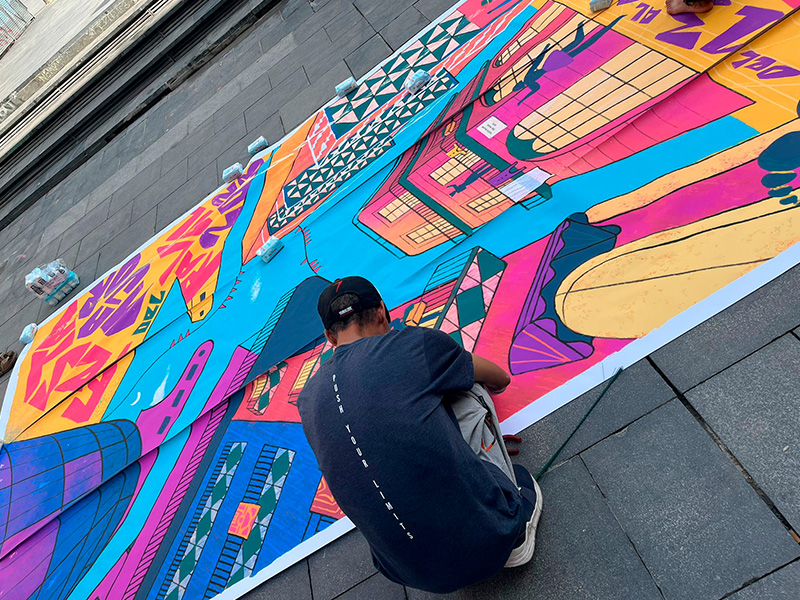
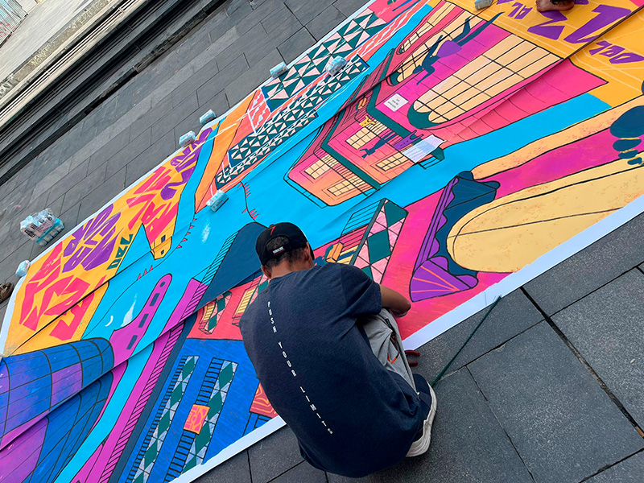

Probando, probando.
Jardí ambulant, jardí ambulant
Estamos en la Plaza dels Àngels, delante del museo del MACBA.
Hola, me llamo Carmen Paula Bermúdez y vivo en Barcelona desde hace muchísimo tiempo, más de 20 años.
Soy Salva Soler, he venido aquí un poco de rebote, o a través de, del proyecto Amunt! Proyecto orientado a gente que recibe una prestación, como el ingreso mínimo vital o la renta mínima garantida.
Mi nombre es Laura Tomás, soy educadora del proyecto Amunt!.
Hola, me llamo Cristina.
Yo me llamo Julia, voy a la Escola Vedruna Àngels y hago 3r de la ESO.
Soy Andrea Miguel, y estoy como responsable de sostenibilidad del MACBA.
Yo soy Santi Cirugeda del equipo de Recetas Urbanas, uno de los miembros múltiples que hay.
Bueno, para mí el Jardí ambulant es, sobre todo, especialmente, un lugar de encuentro en cercanías del MACBA con personas maravillosas. He ido conociendo personas aquí como Santi, como Andrea, Amaia y las los otros compañeros y compañeras que vienen del proyecto Amunt!
Entran en un mismo espacio muchas edades diferentes. Me gusta que sea de participación voluntaria y que sea una construcción que todos y todas tengamos voz.
El Jardí Ambulant para mí es un intento en proceso de hacer que una institución, que como toda institución tienen sus limitaciones, no hay instituciones perfectas, es muy difícil incorporar todas las diferencias de personas y grupos humanos. Y es un intento amplio de incorporar a muchas usuarias que no están en este museo MACBA, que no han sido partícipe, darles una cabida de manera diversa desde la educación, desde la cesión de espacios sociales, desde la ‘’encobración’’ de sus ideas y opiniones a una mejora de los espacios públicos y funcionamiento del museo. Con lo cual es un intento de hacer una institución lo más amplia posible.
Es un espacio donde hemos estado hablando, que queríamos hacer y ahora estamos construyendo, pero antes de esto había un proceso de qué nos gustaba hacer y qué nos gustaría que tuviese la plaza, de conversar bastante las ideas y ahora ya las estamos poniendo a prueba haciendo maquetas y después ya lo haremos a lo grande.
A mí me gusta mucho porque aparte de estar con mis amigos, puedo hacer muchas cosas, como construir y jugar.
Me impactó de entrada lo que presentó Santi, que esta obra está abierta a todo el mundo, es muy rompedor y explica mucho de lo que es el proyecto. Este cartel que hay en la entrada típica de obras de “prohibido el paso a personal ajeno”, que aquí sea especialmente al revés, espacio abierto también al personal que no sea del proyecto, creo que es muy rompedor y transmite mucho la idea del proyecto.
Y todo el mundo me parece super creativo, con inquietudes vitales, dispuestos a pensar problemáticas sociales, ecológicas, de arte, de arquitectura. Yo, además de escritora, soy historiadora del arte, que es mi vocación.
No me ha quedado aún claro de que va, porque es una cosa que va creciendo sobre sí misma, ¿no?, entonces, pues depende un poquito de todos.
Precisamente, Jardí Ambulant es un proyecto que nace de la interlocución con el barrio y con la intención de estar generando espacios de escucha activa y de diálogo desde una lógica más horizontal, y más allá de esto, también aspira a ser un lugar de entrada al museo desde otra mirada más comunitaria con vecinos y vecinas, a quienes el museo también les pertenece.
Estamos haciendo un pequeño sitio para estar tranquilos, donde habrá un toldo para que no haya el sol, para que no moleste, y dentro habrá cojines, queremos que el suelo esté un poco ‘’acolchadito’’ para que se esté más cómodo, para estar tranquilos y conversar con los amigos, con la familia o con quien estemos. Ya que por donde está situada la plaza puede parecer que no sea un sitio muy agradable de estar, pero creo que todo el mundo puede tener un lugar y si hacemos varias zonas, una zona la verde o la zona que estamos creando nosotros, puede haber más gente de todas las edades distintas, y sobre todo donde se estará mucho más tranquilo a la hora de caminar por allí.
Me gustaría que hubiera un ‘’escac’’ grande para jugar, ya que pudieran jugar grandes y pequeños. Y eso me gustaría.
Me encantaría que pudieran encontrar soluciones prácticas, y que esas zonas de ahí frente del museo y alrededores se pudieran convertir en un espacio muy deseado, ¿no?. En primer lugar, para los vecinos, para la gente que lo habita y tienen que pasar por ahí casi cada día. Pero que también pueda atraer a otras personas de la ciudad o que pasan por la ciudad. Es decir, me encantaría que haya plantas, zona verde. Me encantaría que hubiera lugares donde poder sentarse o recostarse. Y también algún tipo de solución para los niños y jóvenes en elementos lúdicos.
Parece que hay una demanda de verde porque esta es una plaza dura de ejemplo de libro, incluso si le pones árboles, tal como están plantados, sigue siendo una plaza dura. Además, tal y como nos viene el clima los próximos años o décadas, la sombra va a convertirse en un bien muy preciado, hay que climatizar las plazas. El verde es necesario porque somos animales y necesitamos verde para comer, para refugiarnos, para estar tranquilos e incluso para estar en paz.
En este caso siempre nos interesa y el arranque del proyecto ha sido poner de actores principales a toda la gente que está en el centro escolar, como primer motor de arranque, pero eso no quiere decir que no estemos trabajando con otras entidades sociales que tendrán que mirar con ojos de respeto y cariño a esa primera propuesta que lanzan estos centros escolares para aportar experiencia, otro marco de generación de edad. Se están haciendo talleres, talleres en escuelas por ahora, y poco a poco se están incorporando y se están haciendo montones de reuniones. Andrés y Amaia están haciendo más de 30 y 40 reuniones con entidades sociales por el barrio para contarles en primera mano el proyecto y montar esa cadena de talleres que luego se puedan interrelacionar unos con otros, ¿no?. A partir de ahí, tanto dar una viabilidad de uso a lo que es el espacio social, de cómo funciona, quien lo usa, para qué lo usa, y al mismo tiempo plantear la mejora de este espació social y preguntarles también a los colectivos que quieran participar y a estas escuelas como podrían participar del uso de los espacios públicos, del cual también son usuarios, y que está en continuo debate público entre ayuntamiento, museo, entidades barriales... Que el MACBA sea un caos de conciliación de todas esas ideas distintas y de maneras de ver la ciudad que tiene mucho conflicto entre distintas edades, usos, skaters, inmigrantes, turistas, jóvenes, mayores. Intentar que este ‘’jardín ambulante’’ vaya atando y ligando complicidades, limando aspereza para que se puedan hacer intervenciones en el espacio público.
El espacio acaba también queriendo incorporar todos esos debates sobre el museo que suceden fuera, poderlos escuchar desde dentro y ver las posibilidades existentes que hay de construir y de acercarlos más a la realidad del propio museo.
Me gustaría que le sirviera para abrirse, para que las personas vecinas y los visitantes puedan ver que el museo es algo más que una estructura cerrada de 4 paredes y obras a dentro, o que es un espacio restringido para algunos. Me gustaría que la gente a partir de esta iniciativa viera que el museo también tiene una posibilidad de y para la ciudadanía.
Las miradas siempre van a cambiar porque si cambia el tejido y el espacio físico, las miradas y las opiniones e incluso los movimientos de las personas necesariamente van a cambiar, pero que ojalá cambie para mucho mejor. Hermoso como un jardín.
Creo que en el museo ensi, a lo mejor vendría más gente, yo que siempre paso mucho por aquí, siempre veo a gente, muchas escuelas, turistas, mucha gente de diferentes edades, a lo mejor un poquito de sentirse mejor a la hora de ir.
En nuestro caso somos un equipo que va y viene por muchos sitios que conocemos a Elvira. Elvira es quien arranca el proyecto y nos llama para relacionarnos un poco con el equipo que tiene, y con otro equipo que monta Elvira en el museo para ayudar en este proceso colectivo, a incorporar por nuestras habilidades metodológicas y nuestras independencias realmente a priori de cualquier institución, pero sí con ganas, siempre, de trabajar desde la calle de la base, pero incorporando instituciones, en este caso es el contrario, es la institución la que nos llama con esta experiencia de muchos años, y creo que es un buen concilio intentarlo conjuntamente.
Entonces yo creo que la actividad que acoge el Jardí Ambulant es muy diversa, depende también de los grupos, de las personas, de los colectivos que deciden como sumarse un poco al proyecto. En el caso por ejemplo de las escuelas estamos trabajando desde diferentes niveles y también desde diferentes grupos con la comisión del medio ambiente, de algunas de las escuelas y con ellas estamos trabajando desde toda la parte de trabajo espacio público, repensar como se configura el espacio público, como nuestra identidad también se acaba definiendo según como ocupamos ese espació y a su vez estamos teniendo conversaciones y diferentes diálogos y debates con diferentes vecinos y vecinas del barrio para escuchar sus diferentes propuestas y ver como las podemos acoger también dentro del museo y de la actividad que planteamos y construir conjuntamente esas posibles sinergias que den respuesta a esas necesidades colectivas que vienen por parte del barrio en el que estamos.
Han salido ideas loquísimas, desde una especie de zepelín, donde los niños o la gente pudieran montarse en el zepelín y ver la plaza un poco desde arriba, se habló también con Santi otro día y allí con los compañeros la idea de una tirolina algo así que podía estar desde fuera, que empatara un lado del museo con otro lado de la plaza. Otro habló de que la tirolina podría estar dentro del museo, y entonces hablamos incluso de la posibilidad de que no solo fuera la cosa de jugar, ¿no? de la emoción que cualquier tirolina, que cualquier tobogán te puede dar ¿no?, sino como combinar esa emoción con aspectos de arte, de arte mural, por ejemplo.
Yo escucho dentro del taller como muchas voces de ideas.
He escuchado pajaritos.
Yo escucho distintas voces, música, risas, complicidad.
El aire, los pájaros, los animales.
Un sonido muy terapéutico, en la Alhambra allí lo tenía muy claro, es el agua.
También he escuchado el ruido que hay actualmente o el sonido que hay actualmente de los patines, de los skaters porque también es algo muy característico de esta plaza.
Me ha hecho gracia porque he escuchado un niño berrear por allí y la gente del instituto que sale, esto está fuera del jardín ambulante, estamos de puertas hacia atrás, y creo que muchos de estos que están ocurriendo aquí ahora mismo, gente conversando, de gente hablando, de algún pajarillo que se escucha es lo que se tiene que extender a otros lugares, ¿no?. Muchas más lenguas que no se escuchan más lenguas, me gustaría escuchar mira que estamos hablando de interculturalidad, pero seguimos escuchando las mismas lenguas, me gustarían más lenguas, y sobre todo esas conversaciones cotidianas se ven más continuamente en un museo que es de arte contemporáneo.
 
